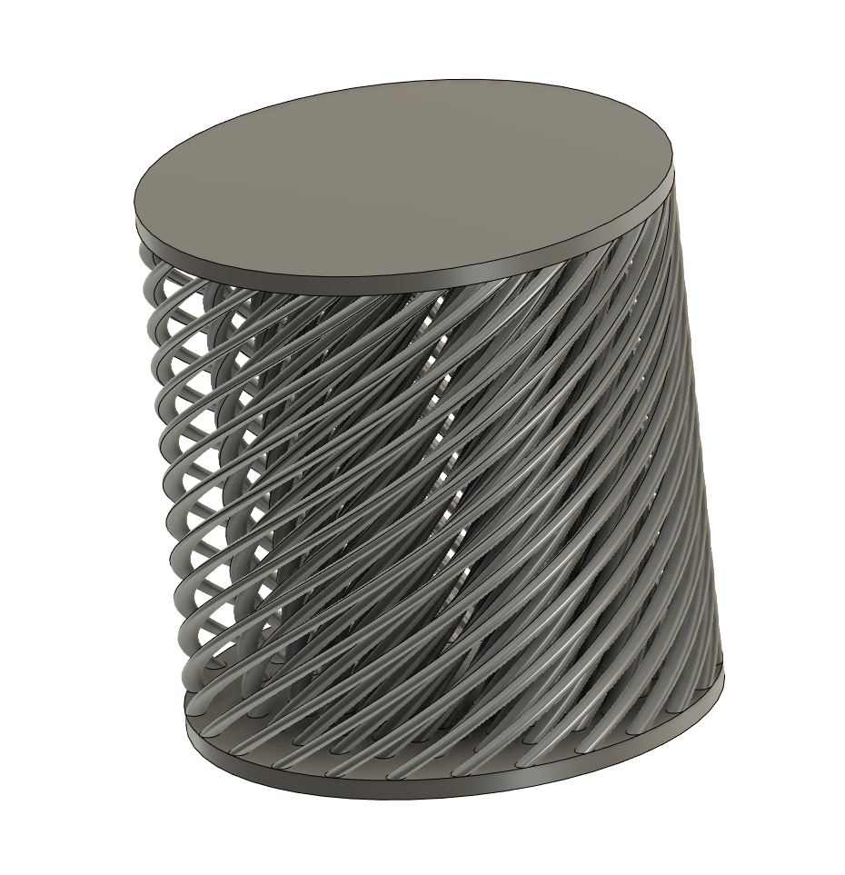
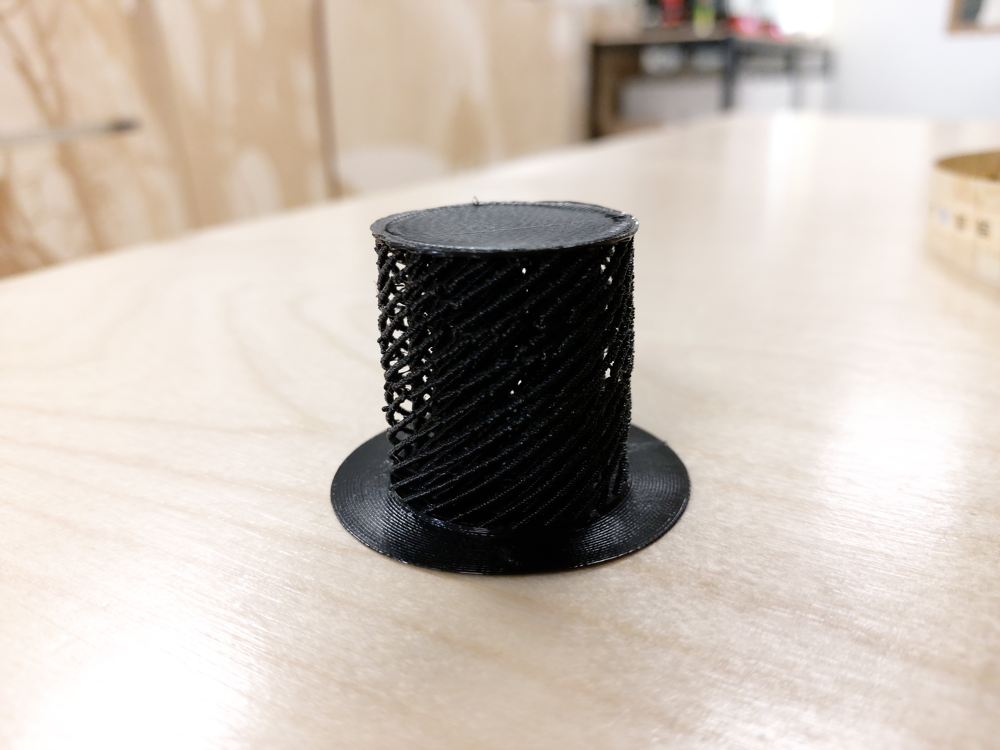
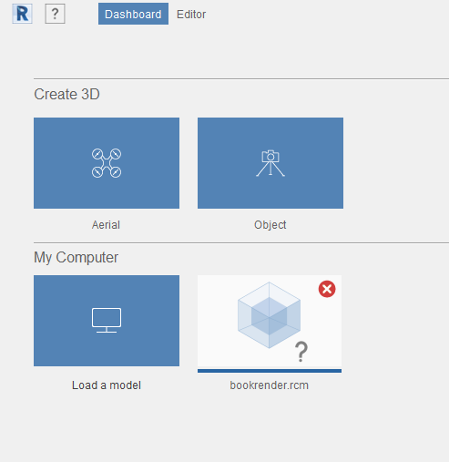
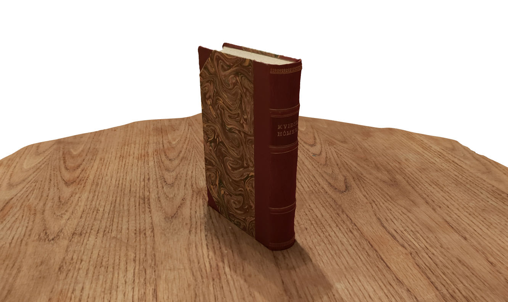
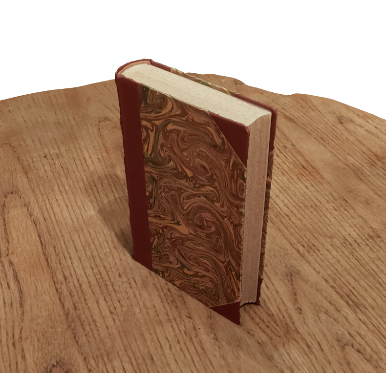

3D scanning and printing
Preparations
As usually, before starting work on the project I watched a lecture to get a sense of purpose for doing it. The lecture, 3D Scanning and Printing, was probably the most interesting I've watched so far and provided some great insight into the capabilities, limitations and prospects of 3D printing as well as introducing 3D scanning briefly. I noted some interesting information from the lecture here below.
1. Additive vs subtractive: 3D printing is an additive manufacturing method whereas CNC milling is a subtractive manufacturing method.
2. Geometrical complexity: Objects made with additive manufacturing methods offer much more geometrical complexity than otherwise.
3. Resolution and Material constraints: Additive manufacturing methods are far from perfect as casting offers a higher resolution and they are limited to few materials.
4. Slow manufacturing: 3D printing takes a long time, especially when making large objects with lithography machines.
5. Supports: Supports are sometimes needed to keep the object stable during printing. Although easily removable, they often leave undesired surface finishes that need to be amended.
6. Some design constraints: Printable area, minimum wall thickness, thermal properties of the material can affect tolerances, printing processes are orientation dependant.
7. Different processes: Not all additive manufacturing is created equal so various 3D printing processes offer different pros and cons.
8. Concrete printing: Large-scale concrete printing is an exciting and growing industrial solution that might prove beneficial for space exploration in the future (very cool).
9. Properties: Mechanical properties of 3D printed objects tend to suffer unless with very expensive selective laser sintering machines.
10. Filament environment: I've wondered if filaments are affected by the surrounding environment and it was interesting to see that machines from Sindoh use cartridges in a closed, controlled environment.
11. File formats: .stl files are the most common for 3D printing and are essentially a list of triangles. These files can become quite large quickly with complicated designs. Units or material properties are not part of the format which can be a drawback.
12. 3D scanning technology: The various methods and mathematical ingenuity that make 3D scanning possible is very interesting.
13. Photogrammetry: An accessible method to 3D scan objects but intensive computation (GPU intensive) is required for decent resolution.
3D Modelling
I couldn't come up with anything practical so I wanted to make something that was at least visually appealing. After some doodling I came up with this simple spiral geometry which would not be possible to make with CNC milling in the slightest due to its internally revolving features.
3D Printing
The design was 3D printed on the 26th of February and took about 2 and a half hours.
3D Scanning
I downloaded Meshroom, a photogrammetry program that converts images from multiple points of view to a 3D rendered scene, from this link. I chose one of my favorite books to be the subject of a 3D scan, Homer's Iliad and Odyssey, and proceded to capture 73 images of it with my smartphone's 48MP camera. However, Meshroom crashed my computer almost immediately when I started processing (NVIDIA GTX 1060 6GB Graphics card).

I tried regard3D as well but it froze my PC 3 times before I gave up. A hardware issue is a likely reason for this (possibly my SATA hard drive) so I installed Autodesk's ReCap Photo which does the processing for you on a cloud. On the dashboard, I selected the "object" option and simply uploaded the collection of images.
After a couple hours of que time the results were ready.
 I'm blown away by the accurate geometry and clarity of texture achievable with only a handfull of photographs. The only setting I messed with was cropping the object but otherwise it was literally plug and play. It's clear that there are a few limitations to photogrammetry as the bottom of the book was not modelled (not visible to camera) which was expected though. There are also some abberations on the book's spine which is probably due to insufficient information from the images.